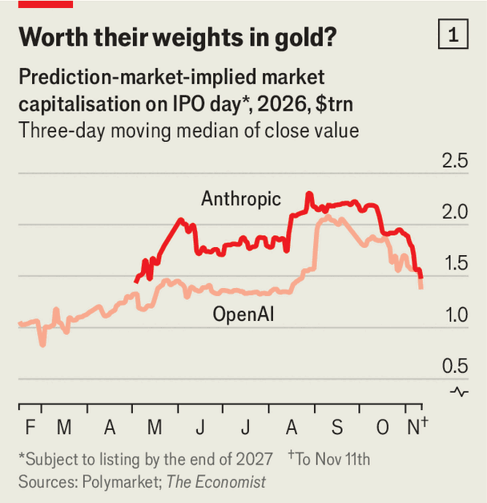
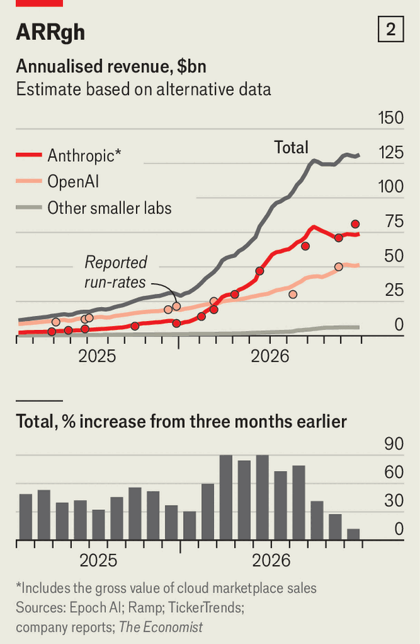
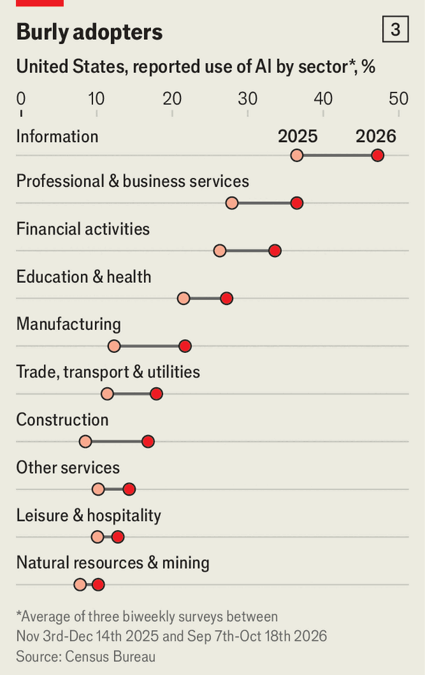
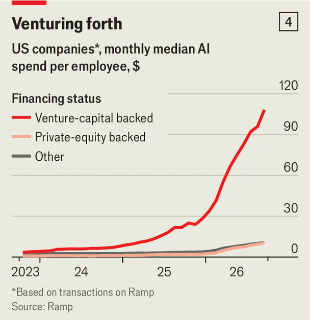
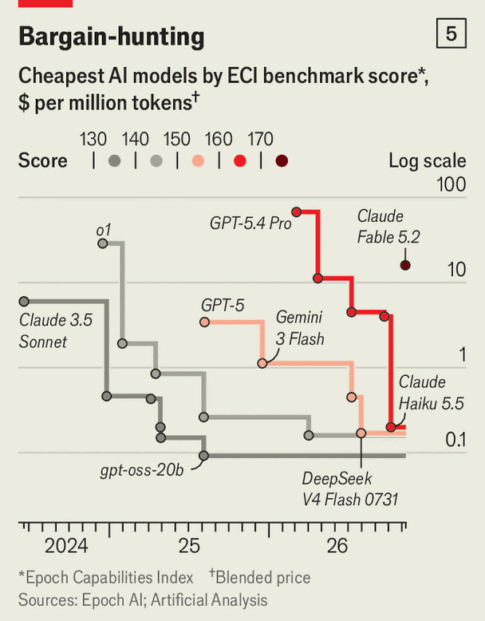

Can the AI boom make enough money to sustain itself?
Wall Street has started to worry
Nov 12th 2026
Both artificial intelligence and the tricky business of valuing stocks boil down to questions of timelines. Establishing what a company is worth is a hazy exercise at the best of times, full of courageous assumptions about which cashflows will arrive when. Consider, too, timelines for AI—the years, few or many, until the technology’s capabilities surpass humans’—and the exercise veers into incoherence.
Markets do not enjoy the luxury of coherence, though. Take the imminent listing of Anthropic, the first big pure-play AI developer to go public. Anthropic’s prospectus touts the many remarkable (and profitable) ways in which advanced AI could transform the economy, but also warns would-be buyers off. “Our decision-making may run counter to investors’ expectations,” it says, for instance with “forward investments…that may seem irresponsibly large at first glance”.
Still, somewhere between Utopia and Armageddon, investors need to find a way to pick a number. Anthropic is aiming to float at a valuation of around $1.5trn, which would make it one of the 15 biggest public companies in the world.
The listing comes at a precarious time for AI. Jitters about data-centre debt collided with midterm elections in America, where AI-sceptical candidates prevailed, and, bizarrely, with the revelation that Jensen Huang, the boss of the chipmaker Nvidia, was having an affair with an alleged Chinese agent.

Before all that, Anthropic looked set for a valuation of $2trn or more (see chart 1). OpenAI, its main rival, has punted its own listing into next year. Nvidia’s share price was about 30% below its recent peak as The Economist went to press. The “neoclouds”, which borrow, often prodigiously, to run data centres, have done worse. But a comeback may be on. Shares in CoreWeave, one of the largest, rose by 25% on November 11th, following strong earnings. The stock had previously been down two-thirds from its high point this year in May. And Anthropic’s IPO is, reportedly, heavily oversubscribed.
So the IPO will be a weighty moment. However many trillions Anthropic lists at, from then on it—and, increasingly, AI more widely—will be judged not with the gauzy optimism of venture capitalists but with the beady eyes of Wall Street. Investors will wonder whether the technology can possibly generate enough cash to justify these valuations or underwrite the colossal scale of data-centre construction planned over the next few years.
The numbers are vast. The Economist calculates that AI needs around $3trn in revenue by 2030 for the planned data-centre buildout to offer a conventional rate of return. Other analysts, including Stijn Van Nieuwerburgh of Columbia Business School and a duo at the Stanford Institute for Economic Policy Research, have reached similar figures. To put that number into perspective, all compensation for all workers—wages, plus perks like health insurance—adds up to around $16.5trn in America, or $35trn across the OECD, a club mostly of rich countries. So AI would need to lay claim to almost a tenth of today’s rich-world wages for the data-centre boom to pencil out. Of course, that could happen in a more benign fashion if the entire economy grows swiftly—and AI evangelists do also expect dramatic growth from here.
Safe to say, AI isn’t quite there yet. Anthropic has reported that its annualised run-rate revenue at the end of October was $81bn. OpenAI’s was $50bn as of the end of September. Toss in smaller developers, as well as Google’s, Meta’s and Microsoft’s revenues from their own models, and the AI model-makers might be generating around $200bn in total.
All that cash sits at the top of a funnel, cascading downward into the rest of the ecosystem—keeping other AI businesses afloat and persuading investors to hand them more money. The models that Anthropic, OpenAI and the others sell must be run on chips, most often designed by Nvidia and manufactured by Taiwan Semiconductor Manufacturing Company. Those chips in turn rely on a bevy of components. A shortage of one, RAM, a type of memory, sent the stocks of the main South Korean memory-makers, Samsung and SK Hynix, soaring in the spring. Those chips must then be housed in a data centre, festooned with further complicated electronics. All that needs electricity to power it, too: a windfall for the makers of gas turbines, which generate much of the electricity behind the AI boom. Everything in AI-world, in other words, relies on revenue at the top of that funnel continuing to flow in, ideally at an ever-increasing rate.

Getting from $200bn to $3trn means a leap of an order of magnitude (or an OOM, in Silicon Valley-speak). Could that happen? Because so many of the largest players in AI have been privately held, tracing the exact path of their revenues is tricky. But the previous OOM did not take long. The combined revenues of Anthropic, OpenAI and a number of smaller developers (but not Google, Meta and so on) probably crossed $10bn around March of 2025. Today, that figure is $130bn.
The next leap will be tougher. One cause of AI’s recent wobble was a fear that revenue growth may be slowing. Alternative-data proxies like Ramp, which tracks AI spending on company credit cards, and TickerTrends, which collates data such as social-media posts and spending patterns from panels of businesses and consumers, point to slowing revenue growth among the AI developers. A model fitting those data sets to the revenue figures that Anthropic, OpenAI and others have released suggests three-month revenue growth slowed from 80-90% in the spring to 12% in October (see chart 2).
By usual standards, even the smallest of those numbers reflects extraordinarily rapid gains. And not every proxy is gloomy; figures from OpenRouter, a tool which helps developers switch AI providers, now show spending on Anthropic’s, OpenAI‘s and Google’s models surging out of an earlier funk. Still, the more that revenue growth tapers off, the further out of reach the next OOM may slip. Once Anthropic and, eventually, OpenAI list, the reporting requirements of public markets will make any such slowdown far easier to spot.
A trillion-dollar AI economy would change the world, in a way that today’s hundred-billion-dollar one has not. Right now, the technology’s economic impact is still limited outside the AI sector itself. Profit margins and revenue per employee have surged at the “Magnificent Seven” tech giants, but are close to flat for the “S&P 493”, the rest of America’s benchmark S&P 500 index of big companies. Software stocks have now largely rebounded from the clobbering they took at the start of the year, during the “SaaSpocalypse”, when investors worried that automated coding would make it easy to cheaply duplicate nearly any software product.

Macroeconomic figures also have not moved much. Productivity growth has been strong in America, but not much stronger of late than in the early 2020s. Meanwhile, it remains painfully slow elsewhere in the rich world, even in countries like Britain whose firms have adopted AI at a similar pace to America. Global bond markets also do not seem to be pricing in all that dramatic an uplift to growth.
So far the only profession truly upended by AI is software engineering. Many coders now hardly touch code themselves; instead, they supervise armies of AI agents. America’s “information” sector, which includes software publishing, has the highest and fastest-growing AI penetration rate in the economy, according to figures from the US Census Bureau (see chart 3). Mercor, an AI-data company, claims to spend more on AI agents than on employee salaries.
That is extreme, but not entirely unrepresentative. Tech companies’ AI spending looks nothing like the rest. The average VC-backed company spends around $100 per employee per month on AI, according to data from Ramp (see chart 4). Regular firms spend only $10 or so. Many, after a wave of “tokenmaxxing” AI enthusiasm, are becoming more cautious. In October Goldman Sachs, a bank, banned non-engineers from using AI coding tools, citing disappointing productivity gains and concerns about cyber-security risk. (Though JPMorgan, a rival, has since announced that it is doubling down on the technology.)

Where tremendous gains have been most visible is in the underlying capabilities of AI models. A report by METR, a non-profit outfit that embedded researchers at Anthropic, found the pace of improvement in Anthropic’s models may well have doubled in the past year. Recent months have brought a drumbeat of announcements of AI solutions to unsolved mathematics problems, or novel AI-enabled cyber-attacks.
But the surging investment in training AI models has also meant that each leap in model intelligence has been more expensive than the last. That raises the commercial imperative still further to deploy this intelligence profitably.
For now, selling access to AI has been an excellent business. Improvements have arrived fast enough, and the best models have been appealing enough, to let developers charge healthy margins. Anthropic’s gross margin in this year’s first half was 85%. At first glance, then, AI might remind investors of the previous generation of runaway software success stories.
But in their fundamental economics, AI and conventional software are quite different businesses. Software products, from software-as-a-service tools like Salesforce to Google to the social-networking giants, had several appealing characteristics from an investor’s perspective. Switching to a competitor was costly, so their moats were wide. Users would have to relearn how to use a complex tool from scratch. Network effects benefited the biggest players and stymied upstarts: why join a social-media site with no other users, or an ad network with few prospective customers? And, once the software was built, it was cheap to distribute. So, the bigger a company’s customer base, the more users it could spread its fixed costs across, and the tougher any rival would find it to compete on price.
Selling AI models has, so far, been something like the reverse. Switching is trivial. For developers, tools like OpenRouter make it as simple as changing a line of code. For consumers, one chatbot looks much like another. Many products, like Cursor, a coding agent, offer a drop-down menu to toggle between different model providers. Others like Instinct, a personal-assistant agent, make even that decision invisible by juggling among models on the back end, balancing performance and costs. And the cost of serving a new customer is not near-zero, as with regular software. Each new query must be run in an expensive data centre, on a scarce chip.
Still, Anthropic’s and OpenAI’s pricing power has held up thus far. Breakneck revenue growth relies on that position lasting. The firms can manage that either by continuing to make their current business model work, or by finding new ones. They are trying both. So far, though switching costs are low, users have been willing to pay a premium for the best models. But at the current pace of development, each gets only a narrow window, weeks or at most months, to recoup its training costs before a successor surpasses it.

Will cheaper models become a threat? Once a certain level of model intelligence is achieved, it tends to be commodified and plummet in price (see chart 5). That reflects competition between American AI players as well as the threat of Chinese fast-followers. Today’s best Chinese offering on the Epoch Capabilities Index, which aggregates a wide range of AI benchmarks, is Kimi K3.1 Pro, which scores around the same as GPT 5.5 Pro from OpenAI, which was the strongest publicly available American model just over six months ago, in April. Over the past few years, Chinese models have been consistently about that far behind.
Cheap models could be especially worrying if trained cleverly. Researchers at Bridgewater, a hedge fund, using tools from Thinking Machines, an AI startup, found that a small fine-tuned Chinese model beat the then-leading models from Anthropic and OpenAI at processing financial documents. Such fine-tuning requires investments in data and computing that only big firms will deem worthwhile, but if the finding holds more broadly, it will be a tempting way to lower the AI bill.
Still, some uses of AI will always demand the absolute best, especially those that are adversarial, like trading or cyber-security. There, success means staying ahead of rivals. And in other cases too it may be worth paying a premium. Large unsupervised swarms of AI agents, of the sort that OpenAI accidentally set loose to hack Hugging Face, an AI startup, earlier this year, still need top-flight intelligence.
The big developers’ lead on capabilities also could grow. The computational power needed to train the latest models is becoming a moat, keeping upstarts out. Chinese developers are constrained by a (thus far) smaller data-centre buildout and American restrictions on chip sales to China. And Anthropic says that it is getting better at impeding distillation, the process where less capable models are trained on the output of better ones, which has helped Chinese firms stay in the race on the cheap.
AI developers could find ways to shift their business to make spending stickier. In recent months Anthropic and OpenAI have announced a crop of specialist tools for law, science and finance. Anthropic has also set up a joint venture with Blackstone, a private-equity firm, Goldman Sachs and others to start selling bespoke AI services to businesses. Each is an effort to find revenue streams where the company can embed itself and dig a deeper moat.
But AI products can only ever be so sticky. By making computers easier to use, and more responsive to human-language requests, AI itself has simplified the process of moving from provider to provider. Anthropic cannily capitalised on this fact earlier this year, when its spat with the Pentagon drove a wave of sympathetic switchers from ChatGPT. Upon setting up Claude, users were given a prompt that they could paste into ChatGPT, asking the rival model to summarise what it knew about them. Claude would then digest the output, and be able to offer personalised responses from the get-go.
Another option for the model companies is proprietary trading. This could be of the literal sort. Nearly every rumour imaginable has been attached at some point to Safe Superintelligence, the secretive AI-research company run by Ilya Sutskever, a former chief scientist of OpenAI. A popular, if barmy, one is that it is using its models for high-frequency trading. A more likely version of that business model for Anthropic and its peers is prop trading of the metaphorical variety: monetising AI by using it directly, potentially in a joint venture, in domains like drug development or robotics, where breakthroughs could be highly profitable. For sufficiently smart models, restricting access to a few ultra-high-paying customers, which would also choke off the threat of distillation, could be a shrewder move than a wide release.
Politics could get in the way. America’s midterms were the first big elections where AI was on the ballot, and it fared poorly. Ahead of the results, The Economist found that Americans living near a data-centre site swung towards the Democrats by around five percentage points over the year, compared with voters with the same demographic characteristics elsewhere. Voters opted to restrict data centres in all but one of the 41 local referendums on the topic. Anti-data-centre candidates won stunning victories. Most consequential was the surprise election as governor of Texas of Gina Hinojosa, a Democrat who campaigned for a pause in data-centre construction. Texas is host to around a third of America’s data-centre buildout.
The potential moratoriums would hit projects not yet under way, most of them due in 2028 or beyond. In states that elected governors who support a data-centre pause, there are 25.6 gigawatts’ worth of not-yet-started data centres due in 2028, finds Maya Barkin of SemiAnalysis, a research firm. That is equal to just under half America’s current data-centre capacity.
Still, new data centres are comfortably profitable enough to fund tax cuts and payouts for the communities where they operate. Politicians and developers may well be able to negotiate win-win deals—though that may be easier in places with more Republican voters, who are a little less opposed to data centres. Ms Hinojosa has already toned down her rhetoric. After the election, she clarified that Texas is still pro-business. “It is not that I hate data centres,” she said, though she did accuse the industry of “taking advantage of Texas”.
A bigger risk is federal regulation. None of the proposals floating around Congress with any chance of passing so far would interfere much with the AI developers’ business models. But the new Democratic majority will be keener on regulating AI, and could pivot quickly if, say, a serious cyberattack makes AI risk a top-tier issue.
None of that will stop Anthropic from raising gobsmacking sums. Nor has the buildout of data centres yet shown much sign of slowing. But the business models and political environment that brought AI into the hundreds of billions in revenue won’t carry it into the trillions. For that, the industry will need to adapt and evolve. A looming question is whether Wall Street will have the patience to let it. ■